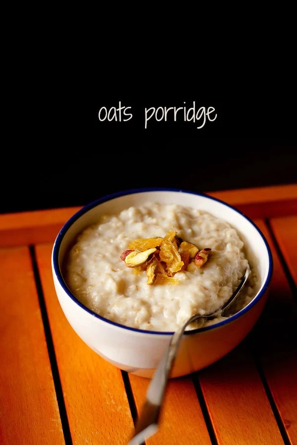

SIMPLE RECIPES MADE FOR_ real,actual, everyday life.
OUR RECIPES, YOUR INBOX. SIGN UP
Oats Porridge Recipe | Oatmeal Porridge
Oatmeal Porridge is a delicious breakfast staple that is easy and quick to prepare. And it is fantastic to customize! Make it with water or milk or a combination of both and with either quick cooking oats or rolled oats (old fashioned oats).
About Oats Porridge
Oatmeal Porridge is a traditional breakfast dish that’s enjoyed in many different form around the world. Wonderfully hearty oats are simmered with water or milk until thick and creamy for a satisfying morning meal that keeps you full for hours.
In India we call this Oats Porridge; in the UK it’s simply known as Porridge – and in the US it’s called Oatmeal. But the ingredients and cooking methods are all basically the same!
How to Make Oats Porridge
- First, add ½ cup quick-cooking oats or rolled oats in a pan.
- Add 1 cup of water.
- Then add ½ cup milk or as needed. You can also add more water for a dairy-free recipe.
Consistency can be easily adjusted as per your requirements. ½ cup milk gives a slightly thick consistency. For a thinner consistency, you can add more milk or water.
Note that the water or milk can be added less or more depending on the type and brand of oats. So do also read the instructions on the packet. - Add sugar as per taste. I just added 2 tablespoons raw sugar or white sugar. Sugar is completely optional. If adding fruits later, then you can skip sugar.
If adding honey, then add when the porridge becomes lukewarm or cools down at room temperature, as honey when heated becomes toxic. - Turn off heat when the and the oats have softened well and you get the preferred consistency.
Serve Oats Porridge hot or warm or at room temperature. Keep in mind that the Oatmeal Porridge will thicken as it cools.

Chia Pudding Recipe (Easy & Healthy)
If you’re looking for an easy, vegan, and healthy make-ahead breakfast, this simple recipe for Chia Pudding is for you. Made with only 4 base ingredients in about 5 minutes and endlessly customizable to fit your dietary and flavor preferences, this sweet and satisfying treat is sure to become a family favorite.
About Chia Pudding
Chia seed pudding is made by soaking chia seeds in liquid like milk, nut milk, or juice for at least 2 hours or overnight. The chia seeds absorb the liquid and become gelatinous, creating a texture that’s similar to tapioca pudding, but with smaller pieces.
How To Make Chia Pudding
- Add 2 tablespoons of chia seeds to a glass or jar. If you want you can rinse the seeds with water in a superfine strainer first.
- Add ¾ cup light coconut milk or the liquid of your choice. For a less thick pudding, add 1 to 1.25 cups light coconut milk.
- Sweeten with 2 tablespoons coconut sugar.
Mix everything till the coconut sugar is dissolved. Break up any lumps with a spoon. Cover the glasses and place them in the refrigerator for a minimum of 2 hours, or overnight.
Later, remove the glasses from the fridge. You will see that the pudding has nicely thickened. - Stir again and break up any lumps. The pudding will be thick.
- Top chia pudding with your desired toppings like chopped fruits and nuts, then serve. Most of the time I add bananas (as they are a staple in my home), strawberries (when in season), and blueberries.
During mango season, I love to have mangoes in my chia seed pudding. For the nuts, I add whatever I have in the kitchen — almonds, raisins, cashews, pistachios, pine nuts, walnuts, etc. Serve straight away.
Eggless Banana Pancakes
This eggless banana pancake recipe is super quick and easy to make with wholesome ingredients. You can feel good about serving these healthy vegan banana pancakes to the kids, and they’re so tasty that everyone will enjoy them as a fun breakfast or snack. Follow my simple steps with photos for making the best sweet and tender banana pancakes that are perfect for loading with your favorite toppings!
About this Vegan Banana Pancakes
Vegan banana pancakes are one of our favorite easy and healthy breakfast recipes. These pancakes are sweet, soft on the inside and slightly crisp on the outside. br
They are even more tender but not fluffy than the traditional banana pancakes, as are made without any eggs, or rising agents like baking soda or baking powder.
In addition to using vitamin-packed overripe bananas and whole wheat flour, I make this vegan recipe with jaggery – a natural sweetener made from sugarcane juice.
While this healthy(ish) variation is my favorite, feel free to use granulated sugar, coconut sugar, or your preferred sweetener to make your banana pancakes. Or, you can even skip the sugar entirely!
How to make Healthy Eggless Banana Pancakes
- First, add ½ cup quick-cooking oats or rolled oats in a pan.
- Add 1 cup of water.
- Then add ½ cup milk or as needed. You can also add more water for a dairy-free recipe.
Consistency can be easily adjusted as per your requirements. ½ cup milk gives a slightly thick consistency. For a thinner consistency, you can add more milk or water.
Note that the water or milk can be added less or more depending on the type and brand of oats. So do also read the instructions on the packet. - Add sugar as per taste. I just added 2 tablespoons raw sugar or white sugar. Sugar is completely optional. If adding fruits later, then you can skip sugar.
If adding honey, then add when the porridge becomes lukewarm or cools down at room temperature, as honey when heated becomes toxic. - Turn off heat when the and the oats have softened well and you get the preferred consistency.
Serve Oats Porridge hot or warm or at room temperature. Keep in mind that the Oatmeal Porridge will thicken as it cools.

Overnight Oats
This overnight oats recipe is quick, simple, and delicious dish made by soaking quick-cooking oats or rolled oats with milk, water, or yogurt overnight in the fridge. Then later topped with fruits or nuts and served for breakfast as a healthy dish for busy mornings. This dish is like having a dessert for breakfast.
About Overnight Oats
Overnight oats are a no-cook recipe. Mix oats and water/milk/yogurt together, refrigerate the night before and serve as breakfast in the morning. This recipe is great for folks who do not have time for elaborate breakfasts in the morning.
I came across overnight oats a few years ago and decided to give it a try. I was so impressed! In fact, I enjoyed it more than cooked Oats Porridge. When we moved to our new home, this breakfast became my savior because it was so easy to prepare and it’s still my go-to breakfast on busy days.
How to make Overnight Oats
- First, add ½ cup quick-cooking oats or rolled oats in a pan.
- Add 1 cup of water.
- Then add ½ cup milk or as needed. You can also add more water for a dairy-free recipe.
Consistency can be easily adjusted as per your requirements. ½ cup milk gives a slightly thick consistency. For a thinner consistency, you can add more milk or water.
Note that the water or milk can be added less or more depending on the type and brand of oats. So do also read the instructions on the packet. - Add sugar as per taste. I just added 2 tablespoons raw sugar or white sugar. Sugar is completely optional. If adding fruits later, then you can skip sugar.
If adding honey, then add when the porridge becomes lukewarm or cools down at room temperature, as honey when heated becomes toxic. - Turn off heat when the and the oats have softened well and you get the preferred consistency.
Serve Oats Porridge hot or warm or at room temperature. Keep in mind that the Oatmeal Porridge will thicken as it cools.